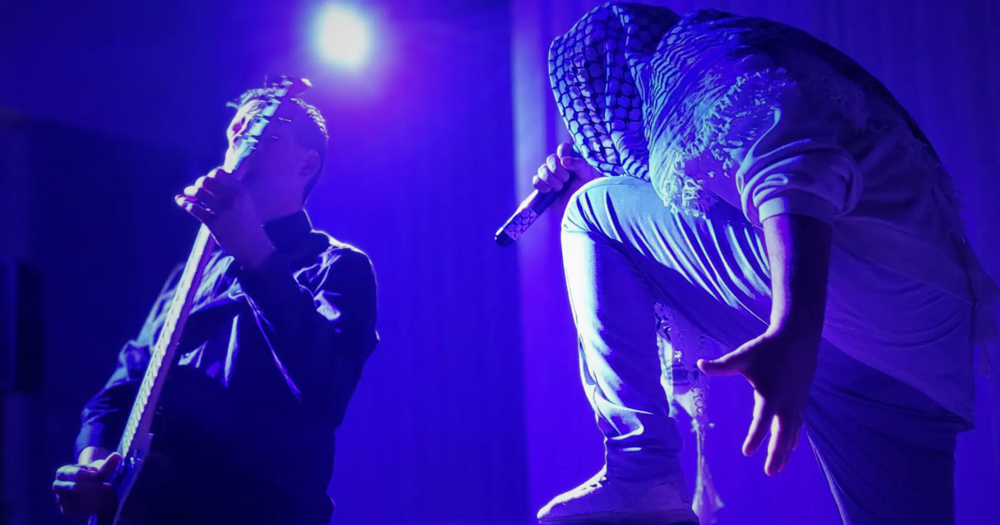

Gud bevare Danmark
Mansur, søn af palæstinensiske forældre, mellem to lande der begge kræver ham hel.
Scenekunststudie i Gellerup. Rå gadekultur, professionel scene. Vi giver ikke køb på nogen af delene.

01 — Forestillinger
Teater om tabuer, spillet råt. Ingen undskyldninger. Ingen bro at bygge — vi står på begge sider i forvejen.
Mansur, søn af palæstinensiske forældre, mellem to lande der begge kræver ham hel.
Depression indefra. Selvmordstanker, og et system der kigger den anden vej.
02 — Foredrag
Chadi Abdul Karim har stået på scener i over 30 år. Han taler ikke om mennesker. Han taler som en af dem.
Fra gaderne i Danmark til olivenlundene på Vestbredden. Første hånd, ikke andenhånds.
Læs mereSelvmordstanker sagt højt. Ærligt til det ubehagelige, uden at pakke noget ind.
Læs mereHele vejen fra Gellerup til kongehuset. Ordet holder ikke, når man har gået turen.
Læs mere03 — Fællesskab
Værksteder i Gellerup, i samarbejde med Gellerup Art Factory. Det deltagerne laver, ender i studiets eget arbejde. Ikke som pynt. Som materiale.
Booking
Prisen afhænger af tid, sted, format og antal. Fortæl hvad I har brug for — så tager vi den uforpligtende snak.
info@aiwaaiwa.dk